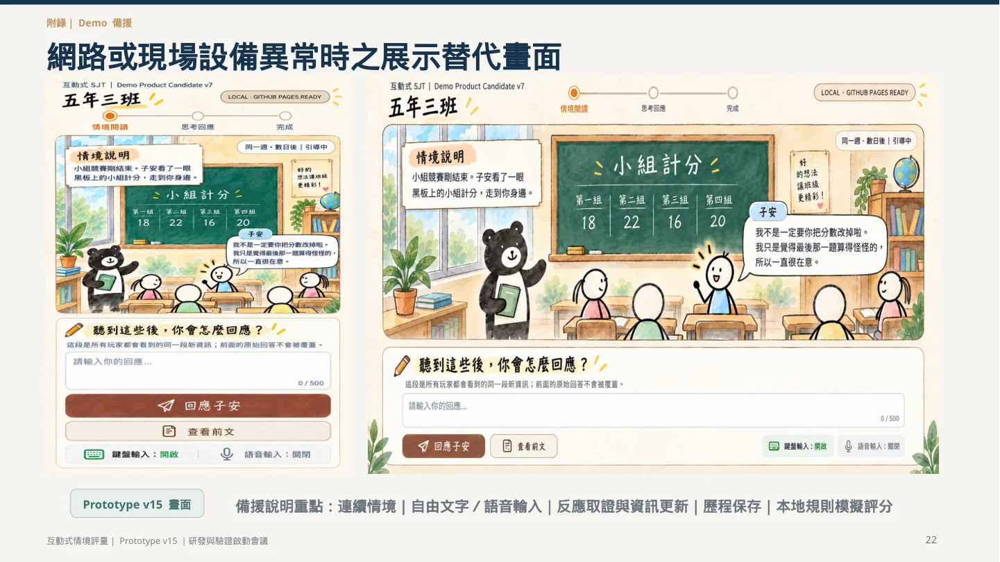

2026.10.05 會議簡報 · 23 頁
04 / SELECTED WORK
互動式情境評量
讓判斷的形成過程被看見
探索自由作答、追問與資訊更新，如何留下可檢視的專業判斷證據。

RESEARCH & DESIGN
從選擇結果，進一步觀察判斷理由
自由作答能呈現做法與理由。互動設計要進一步釐清：何時追問、何時提供新資訊，以及不同階段的回答應如何保留與解釋。
我主導的設計
研發方向、互動流程、證據架構、原型規格與測試治理；以既有正式題為基礎發展互動原型，原正式題由原命題團隊提供。
程式實作與專業驗證透過 AI 工具及跨專業協作推進。這裡呈現目前設計與原型，正式測量品質仍需實證。
EVIDENCE THROUGH THE PROCESS
四個階段，各自留下不同的證據
各題依預定設計進入相應階段；初始回答與後續回答分開保留。此展示說明設計方法，不執行評分。
CURRENT SCOPE
現有原型與後續驗證
目前可以看到
三個情境的操作示範、自由文字與語音輸入入口、追問與情境更新、歷程保存，以及本地規則的模擬判讀。
現有原型使用前端與本地規則，尚未整合實際 LLM 評分。
下一步需要完成
受控後端與題庫環境、專家基準與規則版本、跨案例驗證，以及測量品質、公平性與決策效用的實證。
完整五向度評量與正式結果報表屬研發方向。
FULL MATERIALS